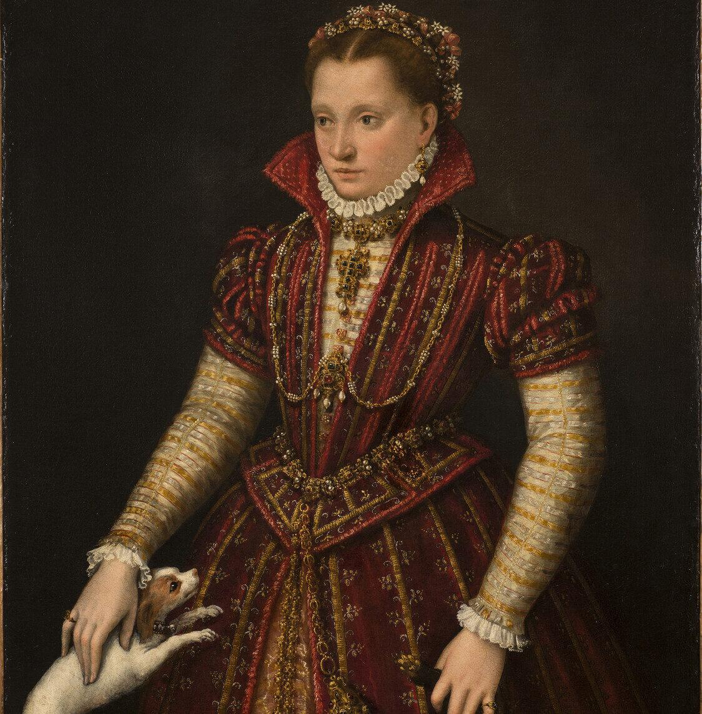
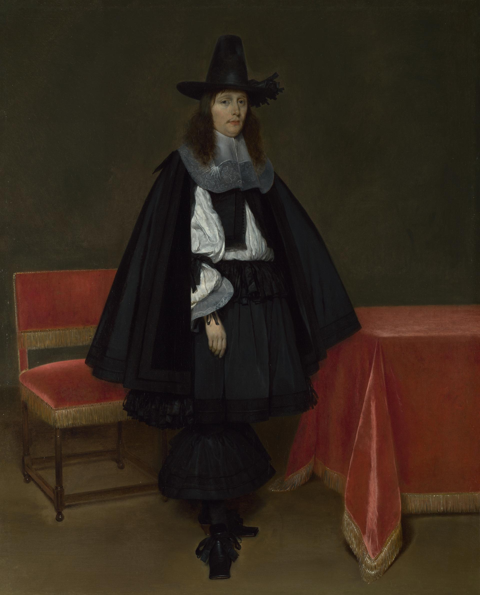
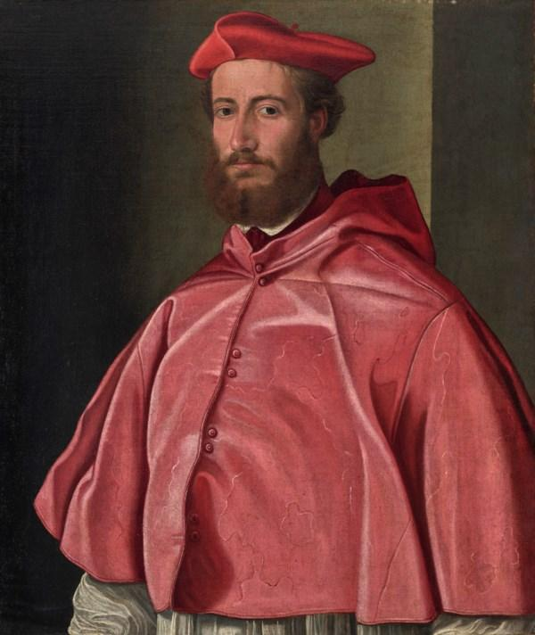
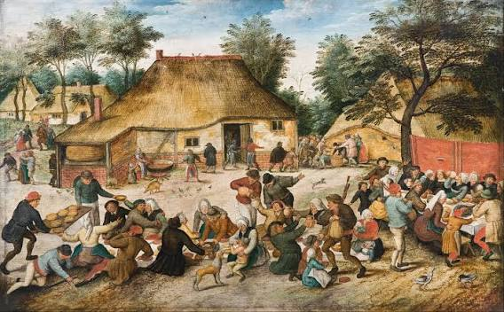

A moda desde os primórdios da humanidade tem sido uma constante em nossas existências. Através dela, somos capazes de discernir preferências, distinções sociais e espelhar a sociedade em determinados momentos da história. Na Idade Moderna, esse cenário não se alterou: ao longo dessa era, a moda sofreu inúmeras transformações, refletindo diretamente os eventos da época. Ao definirmos a moda desse período, notamos uma característica proeminente: a sensação de pertencimento. Essa necessidade de pertencer não só molda quem somos individualmente, mas também pode ser vista como um fator ligado ao nosso lugar na sociedade e à maneira como somos vistos pelos outros. Da população comum aos mais abastados, a moda desempenhou um papel crucial nas sociedades europeias, com sua influência sendo observada em diversas facetas da vida em comunidade.
Começaremos pela nobreza, sabemos que era um grupo que ocupava uma posição privilegiada dentro da hierarquia social europeia, no qual a vestimenta desempenhava um papel significativo na representação da autoridade e do status. Ao longo da Idade Moderna, a maneira como as pessoas se vestiam não estava relacionada exclusivamente à cobertura do corpo; ela também transmitia sua posição social. Entre as classes mais abastadas, a escolha de determinados tecidos, peças de vestuário, ornamentos e acessórios contribuía para construir uma imagem associada à prosperidade e à exclusividade, tornando aparentes as diferenças entre os estratos sociais. Nesse contexto, a indumentária funcionava como uma linguagem visual, permitindo comunicar pertencimento, posição e prestígio. A busca por novos estilos de vestimenta também fazia parte dessa prática, uma vez que a novidade contribuía para manter a distinção da nobreza em relação aos demais grupos sociais. É dentro desse contexto que podemos observar peças como gibões, calções bufantes, rufos e diversos tipos de adornos, que compunham a aparência dos segmentos mais abastados da sociedade e ajudavam a expressar sua posição dentro dela.

Outro fator importante é crescimento da burguesia, o acúmulo de capital por essa classe e as transformações econômicas e sociais da Era Moderna levaram seus membros a adotar elementos da moda aristocrática como maneira de se apresentar e reforçar sua posição social. A assimilação de determinados trajes e estilos de vestimenta aproximava os burgueses dos padrões visuais da nobreza, incluindo peças como o gibão, os calções bufantes, os rufos e outros elementos ornamentais que compunham a indumentária dos grupos mais abastados. A utilização dessas peças permitia à burguesia construir uma aparência associada ao prestígio e à distinção, demonstrando as mudanças em sua posição econômica e social. Ao mesmo tempo, a nobreza buscava novas formas de se diferenciar através da aparência, estabelecendo um movimento contínuo de renovação dos modos de vestir. Criava-se, portanto, uma dinâmica na qual a novidade e a adoção de determinados estilos funcionavam como recursos para demarcar as diferenças entre os variados estratos sociais

Percebe-se que a nobreza contava com o traje como um meio de expressar poder, enquanto no clero, a vestimenta se ligava à representação do sagrado e ao reconhecimento social. As roupas clericais tinham um peso significativo, transmitindo a ideia de que, mesmo sendo homens e mulheres como qualquer outra pessoa, os membros do clero desfrutavam de um status especial por estarem associados e, metaforicamente, mais próximos do divino do que a população fora da esfera religiosa. A forma de se vestir ajudava a criar uma diferença visual em relação aos outros grupos, fortalecendo a identidade de quem integrava a Igreja. Entre os trajes mais notáveis usados pelo clero, encontram-se a batina, a sobrepeliz, a estola e a casula. Estas peças, além de terem seus traços particulares, também se relacionavam com os distintos papéis e níveis dentro da ordem religiosa. Assim, o vestuário clerical não só sinalizava a afiliação de uma pessoa ao clero, mas também ajudava a evidenciar certas hierarquias internas da própria instituição.

Ao olharmos para a base da sociedade europeia, mesmo com as adversidades financeiras e a opressão, o povo simples não ficava à margem: a maneira de se apresentar também era uma constante nesse grupo social. Confeccionadas com materiais mais acessíveis e voltadas para o cotidiano, as vestes compreendiam camisas, túnicas, saias, aventais, calças curtas, coletes e vestidos de corte mais básico, que se diferenciavam conforme a localidade. Um ponto notável é a forte conexão entre essas roupas e a ocupação da pessoa. Campoadores, artesãos e outros integrantes das classes populares demandavam trajes que permitissem o desempenho de suas tarefas, tornando a funcionalidade crucial na seleção dos itens. Adicionalmente, a reiteração dessas vestimentas era um aspecto de grande relevância, pois, ante a falta de meios, era preciso buscar outras formas de manter essas roupas em uso, estendendo sua durabilidade. Assim, a situação financeira impactava diretamente as escolhas de vestuário e os meios para compor a aparência. Diante disso, podemos compreender que a moda durante a Idade Moderna esteve intrinsecamente ligada às transformações e às estruturas da sociedade europeia. Seja entre as classes mais abastadas, que utilizavam a indumentária para demonstrar influência e status; entre a classe mercantil, que buscava imitar os padrões visuais da aristocracia; entre o clero, cuja vestimenta representava o sagrado; ou entre a população comum, cujas escolhas de vestuário eram determinadas por suas condições econômicas e atividades cotidianas, a aparência assumia diferentes significados. Consequentemente, a moda ultrapassava a dimensão meramente estética para funcionar como uma forma de expressão das dinâmicas sociais, permitindo compreender como pertencimento, individualidade, diferenciação e posição social eram comunicados por meio da indumentária. A vestimenta, portanto, constitui um importante recurso para compreender não apenas como os indivíduos se vestiam, mas também aspectos da própria sociedade na qual estavam inseridos.
